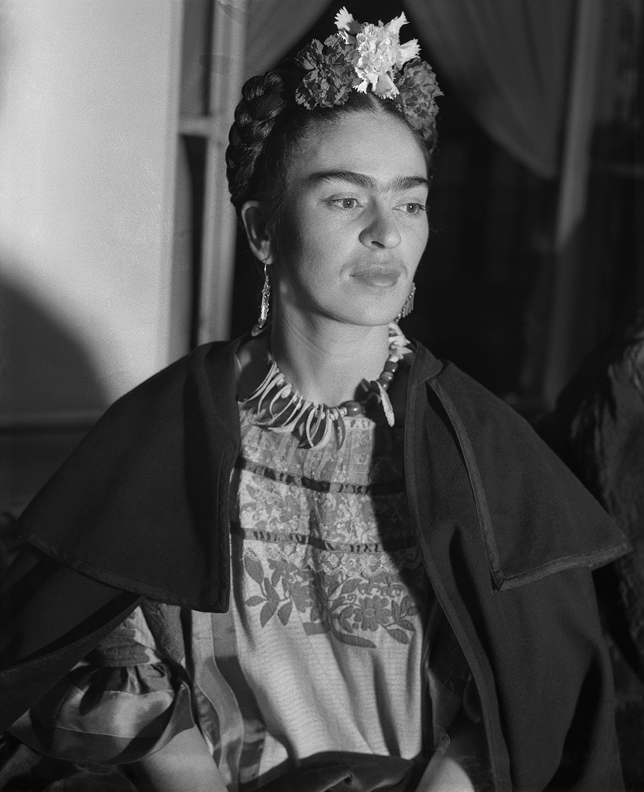
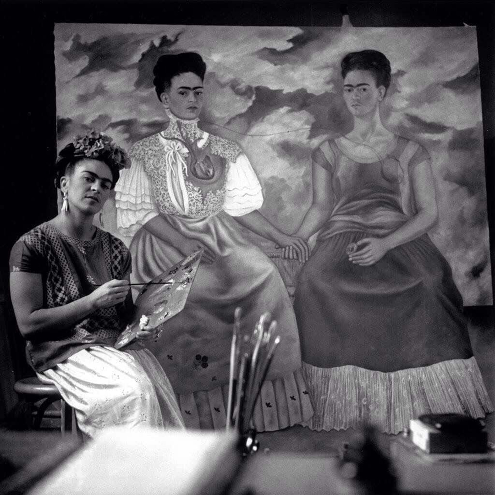

Par Rachati Imane
Tout au long de sa vie, Frida Kahlo à incarné une véritable icône du féminisme, s’opposant à la psychorigidité de la société mexicaine, hermétique à l’émancipation des femmes. Elle construit son mythe seule, avec l’aide de sa forte personnalité et de son caractère intransigeant.Frida Kahlo était athée dans un Mexique très catholique, et c’est là qu’a commencé son originalité et son opposition aux normes. Elle se revendiquait bisexuelle dans une société attachée aux valeurs d’antan, contre ce qu’elle pouvait qualifier de « déviances ». La situation politique au Mexique a eu une réelle influence sur son œuvre. En effet de 1910 à 1920, c’est la révolution. Le pays en ressort affaibli à tous les niveaux : économique, social et politique. De 1920 à 1924, la situation critique du Mexique se stabilise, mais les inégalités persistent. Après cette période, c’est le retour à la distinction des genres. Les femmes, qui ont apporté leur contribution pendant cette époque hostile, ayant réussi à s’imposer dans la sphère politique, se voit réduites à leur ancien rôle de ménagère. C’est le retour à l’asservissement, aux tâches domestiques, à l’absence de droits. Elles n’ont pas accès à la vie politique, à l’éducation… Très jeune, Frida Kahlo refuse de se soumettre, et se lance dans une lutte contre les stéréotypes du genre.
Son arme favorite :
Son arme favorite : la peinture. A travers son art, elle a pu sensibiliser, provoquer et s’exprimer librement. Chacune de ses peintures lui permettaient de parler de sujets tabous, dont personne n’osait parler jusqu’alors. Du sexe en passant par l’avortement, les fausses couches ou encore la dépression, ses peintures illustrent les expériences de la vie d’une femme. Elles permettent de mettre une image sur leurs souffrances et les épreuves terribles qu’elles peuvent rencontrer, que les hommes de cette époque avaient tant de mal à comprendre. Frida Kahlo se permettait tout et n’avait aucune limite, elle ira jusqu’à représenter des organes génitaux. Beaucoup critiqueront son œuvre et la verront comme une réelle marque de vulgarité et d’indécence. André Breton, avant-gardiste du surréalisme, déclara alors que « Son art est un ruban autour d’un bombe ».
Une chose qui nous permettrait de reconnaître la féministe mexicaine parmi mille est son mythique monosourcil et sa petite moustache. Elle ne les cachait pas, au contraire, elle s’en servit pour s’imposer dans ce monde où les femmes sont asservies et victimes de pressions sociales. Elles doivent ressembler à un idéal imposé et pour cela, toute forme de masculinité n’est pas la bienvenue. Frida Kahlo a montré que ses poils n’empêchaient pas sa beauté, elle qui incarnait l’élégance et la féminité. La mexicaine voulait s’affranchir du standard de la femme parfaite, qui doit répondre à de multiples critères. Elle dérangeait, par ses manières anticonformistes. Sur certaines photos de famille, on peut la voir vêtue d’un costume pourtant réservé aux hommes. Diego, sur une de ses peintures, l’a même représentée cigarette à la bouche, bouteille de Tequila à la main. Une femme ayant un faible pour les boissons alcoolisées était plus que mal vue, mais Frida Kahlo aimait ça et ne s’en cachait pas : « Je buvais pour noyer ma peine mais cette garce m’a appris à nager ».
La lutte féministe et son combat en faveur des minorités ne sont pas les seules batailles qu’a entrepris Frida Kahlo. La « mexicanité », l’acceptation de ses racines, de son identité en tant que mexicaine, se rajoutent à cette liste déjà exhaustive. Après ces longues années de révolution et de chaos économique, politique et social au Mexique, il faut reconstruire le pays et faire en sorte que les habitants soient fiers de leurs racines. C’est pourquoi, en 1942 elle devient membre du « Seminario de Cultura Mexicana », organisation créée par le ministre des affaires culturelles. Elle a pour mission d’encourager la diffusion de la culture mexicaine par le biais d’expositions et autres rendez-vous culturels qui représenteraient la tradition du pays.
Frida Kahlo, par son œuvre magistrale et saisissante, son engagement pour la cause des femmes et des minorités, par le courage dont elle a fait preuve durant sa vie semée d’embûches, a aujourd’hui une place encrée parmi les nombreuses femmes qui se sont battues pour l’égalité. Les épreuves douloureuses qu’elle a dû affronter lui ont permis d’avoir les épaules pour braver toutes les difficultés. Ses peintures provocatrices ont été symbole d’ouverture d’esprit et de liberté. Jusqu’à son dernier souffle, Frida Kahlo, en peignant les étapes poignantes de sa vie, a su être la porte parole de toutes ses femmes dont le droit de s’exprimer leur a été enlevé.